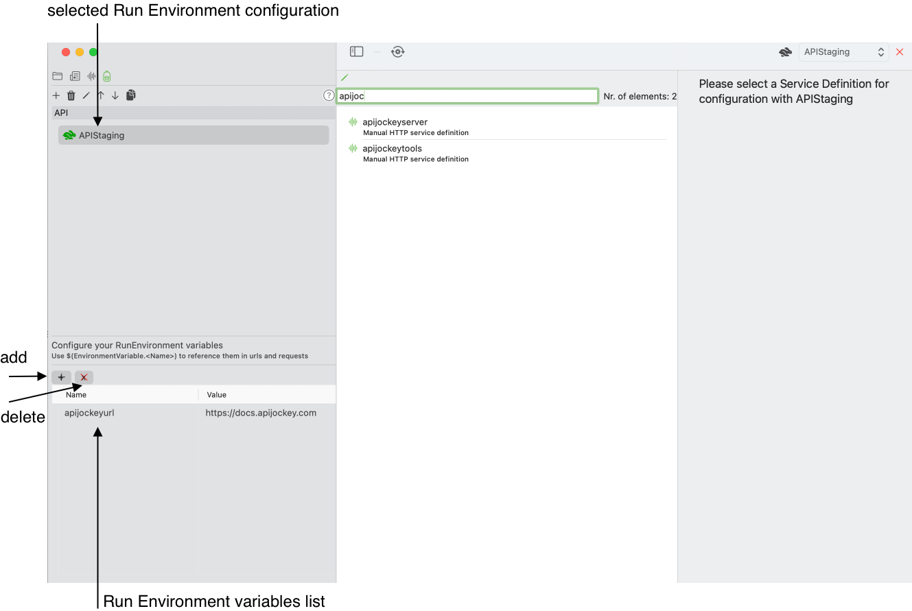
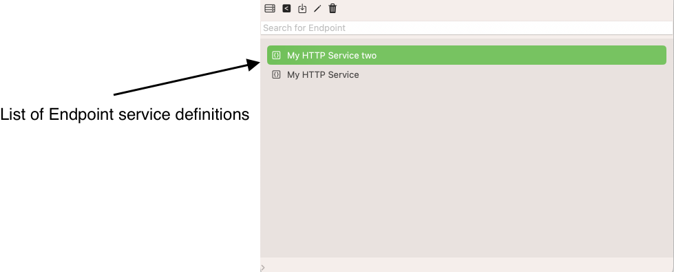
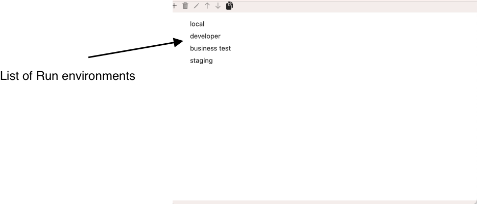
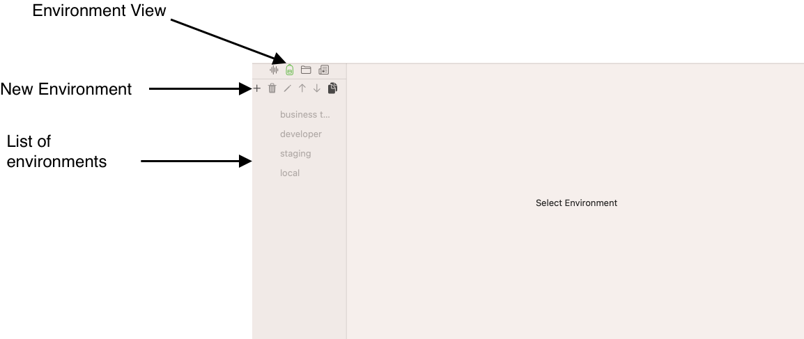
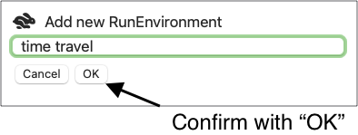
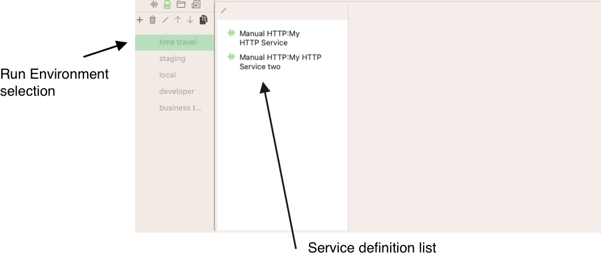
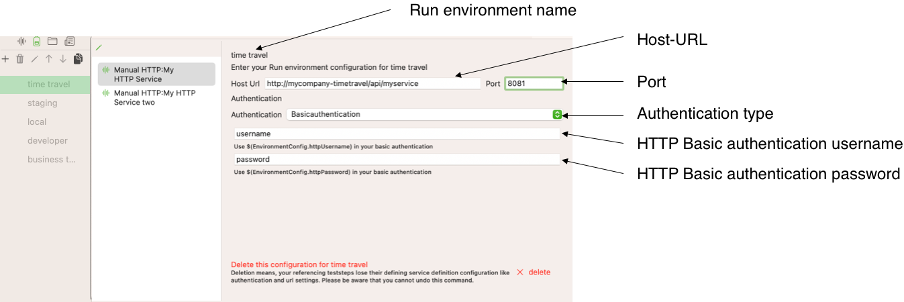
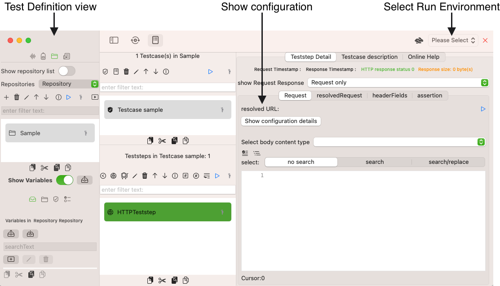
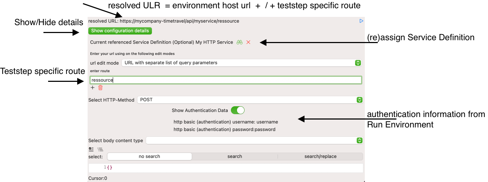
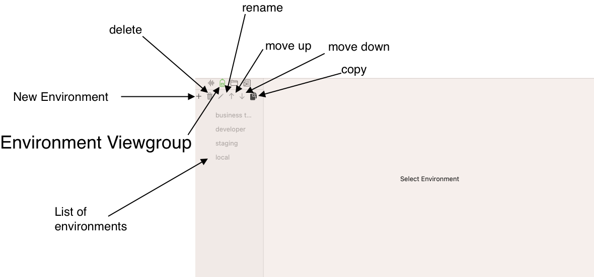

Run Environment
A Run Environment is a logical set of services, applications and configurations that companies use for their software development process to promote development artifacts step-by-step from the local developer machine to production.
Examples of a Run Environments
- A local developer machine
- An integrated test environment that developers use to test their components in combination with other connected services, applications and components.
- A business test environment that business experts use to test software against their business requirements
- A load and performance test environment
- A staging environment with pre-production data
Typical properties of Run Environments
When you develop or test webservice, you will need to run these tests against several run environments. Some companies may have one or two of them, others may have five to ten, especially when project and line teams use different environments due to different production release dates.
The crucial part of testing is to work with different settings for these Run Environments while keeping the Testcase definition stable.
-
URLs will be different for Run Environments.
-
Authentication information may vary , from no or Basic authentication in lower environments, to token or MFA based in higher environments.
-
User information for authentication may vary. Users in lower environments may be exchanged by production-similiar users in higher environments.
Run Environment Variables
Run environments can hold a list of variables with specific values for the run environment.
You may want to use different request parameters for a developers' test environment than for a business test environment or staging environment.
Run environment variables are resolved for:
- requests and
- urls
The syntax to referencing them in your test definition is pretty simple:
$(EnvironmentVariable.

There are two actions available:
- add a new Run Environment variable
- delete selected Run Environment variables for this Run Environment
Use Run Environments for your teststeps
Typically you start by importing or creating a service definition (WSDL, Manual HTTP Service). These service definition hold in general all information that are independent of Run Environments.
You might have a list of Service definition like in the screenshot below: 
You may need to handle several Run Environments like in the next screenshot:
 You would proceed in the following order:
-
You create Run Environment Service Definitions i.e. you define the environment specific properties for your Service Definitions
-
You link your SOAP and HTTP-Teststeps to Service Definitions to use your Run Environment Service Definitions
-
You pick a Run Environment or run a Test execution and run your tests
We will walk through each of these steps below:
Create a Run environment
Switch to the view Environment and click the Button New Environment

This will open a sub dialog where you enter the name of the new Run Environment. Confirm with OK

You will see a new entry, which you select to configure the RunEnvironmentServiceDefinitions, if appropriate. You do this, if you want to switch easily between Run Environments and have predefinition URL and authentication settings. 
We configure the first Manual HTTP Webservice Definition as follows:

With this, we can proceed with the last two remain steps in the TestDefinition View:
We create an HTTP Teststep and link it to the Manual HTTP Service Definition
Create a HTTP Teststep with a Service Definition Reference
We can use Run Environments for Teststeps that reference a Service Definition. For SOAP Teststeps this is a mandatory step during creation and mandatory for WSDL-based schema validation, for HTTP Teststeps this is an optional step and very helpful.
We switch to the View Service Definition and create a HTTP Teststep that references the My HTTP Service Service Definition.

We select the Run Environment Time Travel and open the configuration details for teststep, we are done now. Authentication and base host URL information are kept centrally and referenced only. 
We can focus on the teststep specific parameters like HTTP Method and a specific route under test, see more about Create an HTTP Teststep and Create a SOAP Teststep.
View Run Environment
The view Run environment contains an editable list together with
List of Run Environments

- list of environments displays all environments. Environments allow a service related configuration for URLs and authentication information
- new Environment creates a new entry
- delete removes an environment
- rename lets you change the list display name, which also affects the Run Environment picker text in the Viewgroup Testdefinition
- move up the position of the selected entries
- move down the position of the selected entries
- copy an existing entry to create a new entry
Run Environment configurations for a Service Definition
When you select en entry you can configure Run Environment specific settings, either empty
![screenshot Run Environment with empty Service Configuration] (storage/RunEnvironmentEmptyConfiguration.png)
- Add will create a new configuration for the
- selected Run Environment time travel
- on the Service Definition My HTTP Service two
When you click Add you will see a configuration dialog, outlined with screenshot for an existing configuration on another Service Definition:
(storage/RunEnvironmentServiceDefinition.png) ![screenshot Run Environment Service Definition]
This is a screenshot from a Manual HTTP Service Definition Run Environment configuration for an environment time travel. The SOAP definition differs only in the URL input, which is described below.
Settings for Run Environment Service Definitions
- On the top, you see the currently seelcted run environment name
- You enter the host url and the port for a Manual HTTP Service Definition or a complete URL for SOAP Service. We expect non-SOAP Service to use routes and query parameters added to the host url that will not differ between environments but teststep specific, where soap service have just different URLs without route and query parameters
-
Authentication has three options:
-
Basic HTTP Authentication, you provide a username and a password which will be used to create the HTTP Header Authorization Basic. See the example configuration in the screenshot above
- Bearer HTTP Authentication, you provide a token information which will be used to create a HTTP Header Authorization Bearer
- NO HTTP Authentication, you may provide a payload username a payload password, a payload OTP ** and/or a payload token** that may be static or be variable
Resolution process for Run Environment settings
In the case of basic and bearer authentication, APIJockey Test handles adding the Headers for you. It will resolve the information entered in this configuration screenshot. You can access the authentication information in your payload by using variables, in the case you need to authentication against an Identity Service to get authorized for a business service You can use variables in the configuration, if you need to run an authentication call and want to store a token in a repository variable. For convenience, find all EnvironmentConfig Variables here with the notation to use in your Test Definition
| Authentication type | Textfield name | Variable notation in Test definition |
|---|---|---|
| HTTP basic Authentication | HTTP username | $(EnvironmentConfig.httpUsername) |
| HTTP basic Authentication | HTTP password | $(EnvironmentConfig.httpPassword) |
| HTTP bearer Authentication | HTTP bearer token | $(EnvironmentConfig.bearerToken) |
| None (No HTTP authentication) | Payload username | $(EnvironmentConfig.payloadUsername) |
| None (No HTTP authentication) | Payload username | $(EnvironmentConfig.payloadPassword) |
| None (No HTTP authentication) | Payload OTP | $(EnvironmentConfig.payloadOTP) |
| None (No HTTP authentication) | Payload Token | $(EnvironmentConfig.payloadToken) |